Spline Toolbox Examples
Here are some simple examples that illustrate the use of the spline toolbox.
Copyright 1987-2003 The MathWorks, Inc. $Revision: 1.16 $ $Date: 2003/02/13 23:15:42 $
Overview
One can construct a cubic spline that matches cosine at the following points:
(Note that one can view the interpolating spline by using FNPLT)
x = 2*pi*[0 1 .1:.2:.9];
y = cos(x);
cs = csapi(x,y);
fnplt(cs,2);
xxyy = [-1 7 -1.2 1.2];
axis(xxyy)
hold on, plot(x,y,'o'), hold off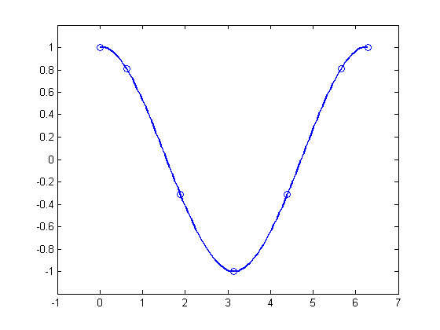Estimating the error in the interpolation
The cosine is 2pi-periodic. How well does our interpolant in CS do in that regard?
We compute the difference in the first derivative at the two endpoints:
diff( fnval( fnder(cs), [0 2*pi] ) )
ans = -0.1375
To enforce periodicity, use CSAPE instead of CSAPI:
csp = csape( x, y, 'periodic' ); hold on; fnplt(csp,'g'), hold off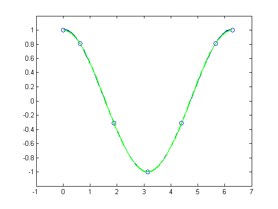
Now, the check gives
diff( fnval( fnder(csp), [0 2*pi] ) )
ans = 3.8737e-017
Even the second derivative now matches at the endpoints:
diff( fnval( fnder( csp, 2 ), [0 2*pi] ) )
ans = 6.6613e-016
The piecewise linear interpolant to the same data is available via
pl = spapi (2, x, y );
Here we add it to the previous plot, in red:
hold on; fnplt (pl, 'r', 2 ), hold off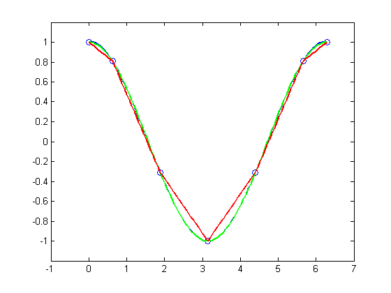If the data are noisy, one would approximate rather than interpolate. For example, with
x = linspace(0,2*pi,51);
noisy_y = cos(x) + .2*(rand(size(x))-.5);
plot(x,noisy_y,'x')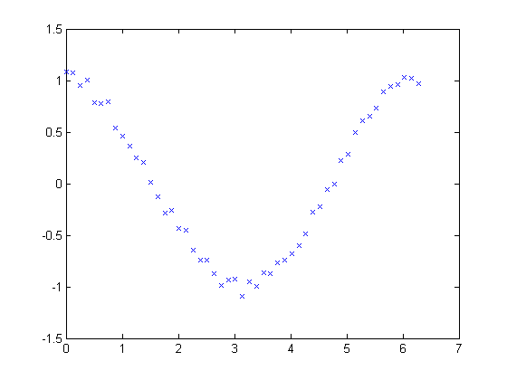... interpolation would give the wiggly interpolant marked in blue
hold on fnplt( csapi( x, noisy_y ) ) hold off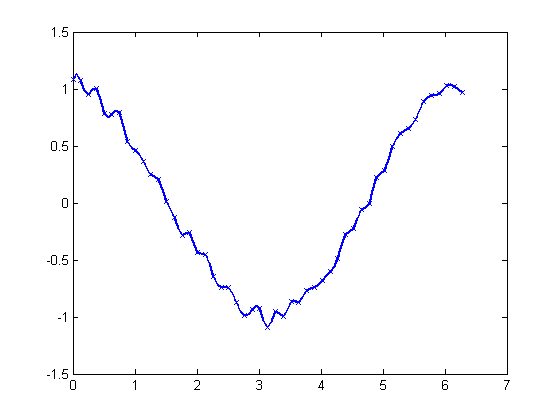
... while smoothing with a proper tolerance
tol = (.05)^2*(2*pi);
hold on
fnplt( spaps( x, noisy_y, tol ), 'r', 2 )
hold off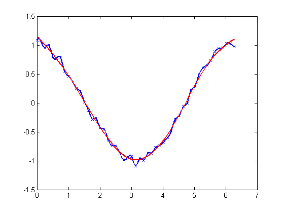... gives the smoothed approximation, shown here in red.
The approximation is much worse near the ends of the interval, and is far from periodic. To enforce periodicity, approximate to periodically extended data, then restrict approximation to the original interval:
noisy_y([1 end]) = mean( noisy_y([1 end]) );
lx = length(x);
lx2 = round(lx/2);
range = [lx2:lx 2:lx 2:lx2];
sps = spaps([x(lx2:lx)-2*pi x(2:lx) x(2:lx2)+2*pi],noisy_y(range),2*tol);
hold on
fnplt( sps, [0 2*pi], 'k', 2)
hold off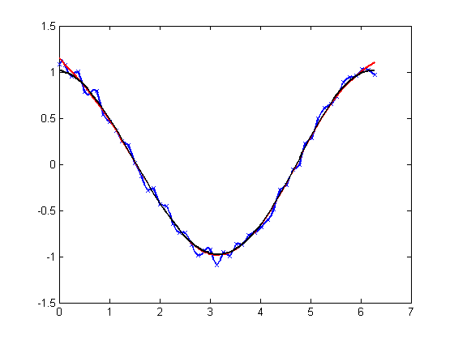giving the more nearly periodic approximation, shown in black.
Alternatively, one could use least-squares approximation to the noisy data by a spline with few degrees of freedom.
For example, one might try a cubic spline with just four pieces:
spl2 = spap2(4, 4, x, noisy_y); fnplt(spl2,'b',2); axis(xxyy) hold on plot(x,noisy_y,'x') hold off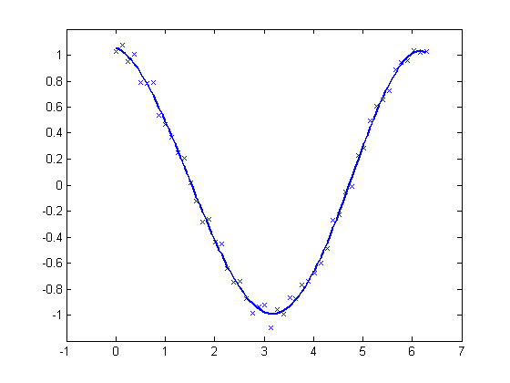
When using an SP... command to construct a spline, one usually has to specify a particular spline space. This is done by specifying a k n o t s e q u e n c e and an o r d e r , and this may be a bit of a problem. When doing spline interpolation, to data X , Y by splines of order K , then OPTKNT will supply a good knot sequence, as in the following example:
k = 5; % i.e., we are working with quartic splines x = 2*pi*sort([0 1 rand(1,10)]); y = cos(x); sp = spapi( optknt(x,k), x, y ); fnplt(sp,2,'g'); hold on; plot(x,y,'o'); hold off axis([-1 7 -1.1 1.1])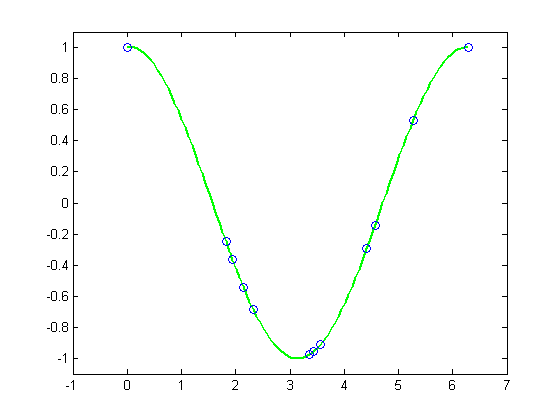
When doing least-squares approximation, one can use the current approximation to determine a possibly better knot selection with the aid of NEWKNT. For example, here is an approximation
x = linspace(0,10,101); y = exp(x); sp0 = spap2( augknt(0:2:10,4), 4, x, y ); plot(x,y-fnval(sp0,x),'r','linew',2)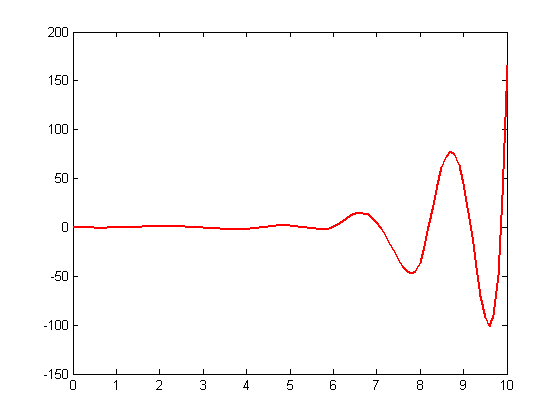
... whose error is plotted above in red, and which isn't all that good, compared to the following approximation with the s a m e number of knots, but better distributed (whose error is plotted in black):
sp1 = spap2( newknt(sp0), 4,x,y); hold on plot(x,y-fnval(sp1,x),'k','linew',2) hold off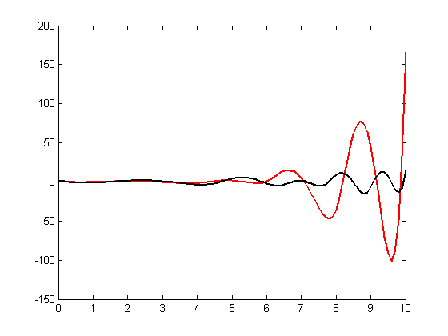
All the interpolation and approximation commands in the toolbox can also handle gridded data (in any number of variables).
For example, here is a bicubic spline interpolant to the Mexican Hat function:
x =.0001+[-4:.2:4];
y = -3:.2:3;
[yy,xx] = meshgrid(y,x);
r = pi*sqrt(xx.^2+yy.^2);
z = sin(r)./r;
bcs = csapi( {x,y}, z );
fnplt( bcs )
axis([-5 5 -5 5 -.5 1])... and here is the l e a s t - s q u a r e s approximation to noisy values of that function on the same grid:
knotsx = augknt(linspace(x(1), x(end), 21), 4);
knotsy = augknt(linspace(y(1), y(end), 15), 4);
bsp2 = spap2({knotsx,knotsy},[4 4], {x,y},z+.02*(rand(size(z))-.5));
fnplt(bsp2)
axis([-5 5 -5 5 -.5 1])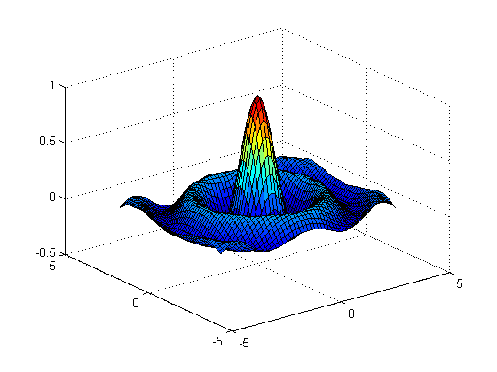Gridded data can be handled easily because the toolbox can deal with v e c t o r - v a l u e d splines. This also makes it easy to work with curves.
Here, for example, is an approximation to infinity (obtained by putting a cubic spline curve through the marked points):
t = 0:8; xy = [0 0;1 1; 1.7 0;1 -1;0 0; -1 1; -1.7 0; -1 -1; 0 0].'; infty = csape( t , xy, 'periodic'); fnplt( infty , 2 ) axis([-2 2 -1.1 1.1]) hold on plot(xy(1,:),xy(2,:),'o') hold off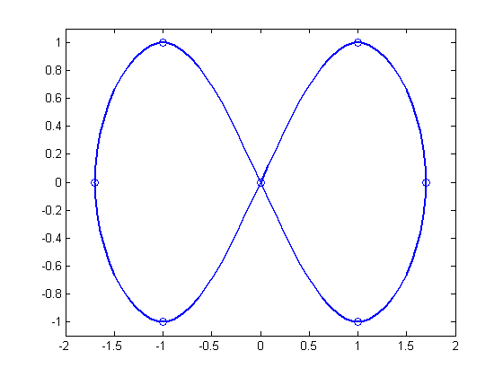
... and here is the same curve, but with motion in a third dimension:
roller = csape( t , [ xy ;0 1/2 1 1/2 0 1/2 1 1/2 0], 'periodic'); fnplt( roller , 2, [0 4],'b' ) hold on fnplt( roller, 2, [4 8], 'r') plot3(0,0,0,'o') hold off % I have plotted the two halves of the curve in different colors and have % marked the origin, as an aid to visualizing this two-winged space curve.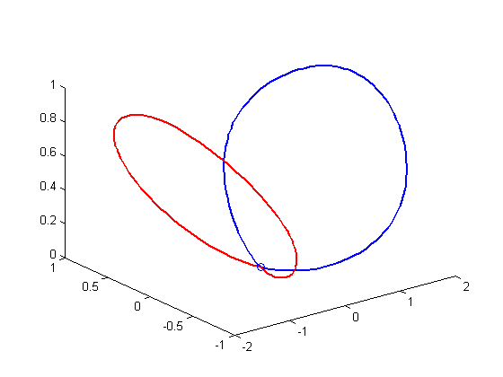
Bivariate tensor-product splines with values in R^3 give surfaces.
For example, here is a good approximation to a doughnought:
x = 0:4; y=-2:2; R = 4; r = 2; clear v
v(3,:,:) = [0 (R-r)/2 0 (r-R)/2 0].'*[1 1 1 1 1];
v(2,:,:) = [R (r+R)/2 r (r+R)/2 R].'*[0 1 0 -1 0];
v(1,:,:) = [R (r+R)/2 r (r+R)/2 R].'*[1 0 -1 0 1];
dough0 = csape({x,y},v,'periodic');
fnplt(dough0)
axis equal
axis off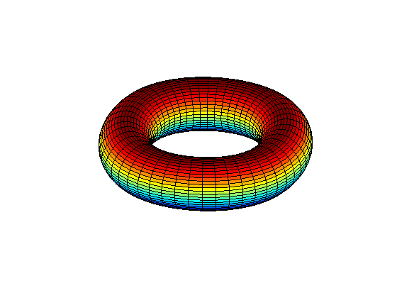And here is a crown of normals to that surface.
nx = 43; xy = [ones(1,nx); linspace(2,-2,nx)]; points = fnval(dough0,xy)'; ders = fnval(fndir(dough0,eye(2)),xy); normals = cross(ders(4:6,:),ders(1:3,:)); normals = (normals./repmat(sqrt(sum(normals.*normals)),3,1))'; pn = [points;points+normals]; hold on for j=1:nx plot3(pn([j,j+nx],1),pn([j,j+nx],2),pn([j,j+nx],3)) end hold off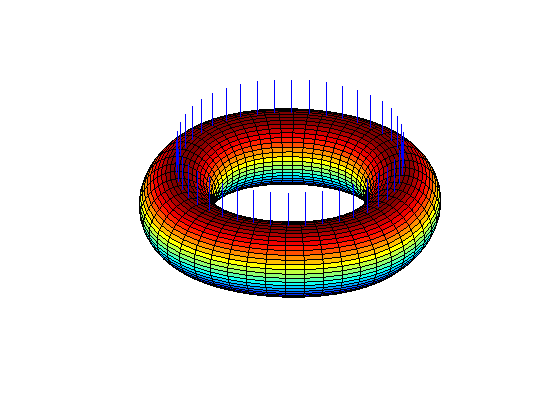
And here is its projection onto the (x,y)-plane.
fnplt(fncmb(dough0, [1 0 0; 0 1 0])) axis equal axis off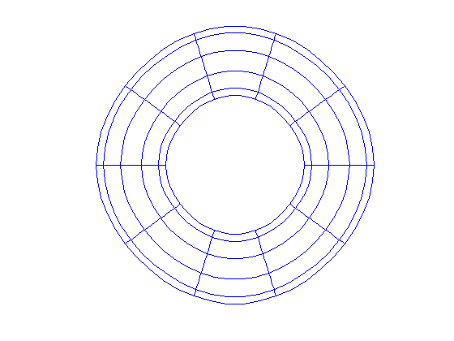
It is also possible to interpolate to values given at ungridded data sites in the plane. Consider, for example, the task of mapping the unit square smoothly to the unit disk. We construct the data values
n = 64; t = linspace(0,2*pi,n+1); t(end) = [];
values = [cos(t); sin(t)];
plot(values(1,:),values(2,:),'or'), axis equal, axis off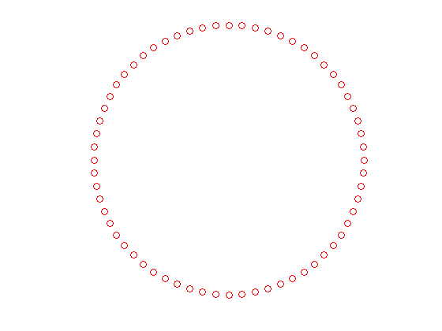... and corresponding data sites (marked here as x, and each connected to its associated value by an arrow)
sites = values./repmat(max(abs(values)),2,1); hold on, plot(sites(1,:),sites(2,:),'xk') quiver( sites(1,:),sites(2,:), ... values(1,:)-sites(1,:), values(2,:)-sites(2,:) ) hold off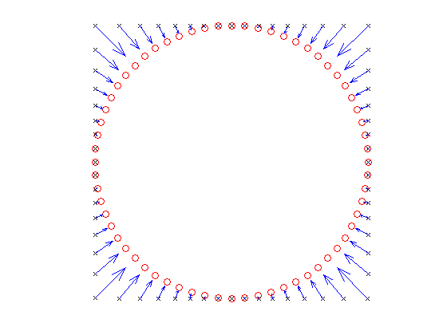
... and then use TSAPS to construct a bivariate interpolating vector-valued thin-plate spline
st = tpaps(sites, values, 1);
... that does indeed map the unit square smoothly (approximately) to the unit disk, as its plot via FNPLT indicates. That plot shows the image of a uniformly spaced square grid under this spline map ST.
hold on, fnplt(st), hold off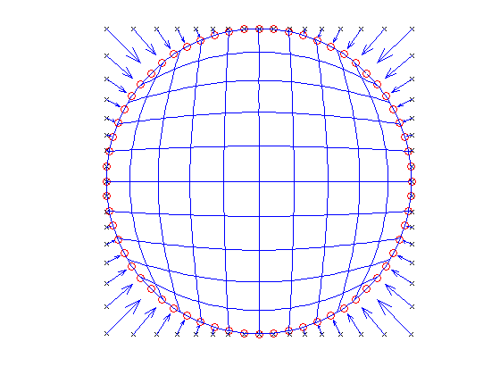